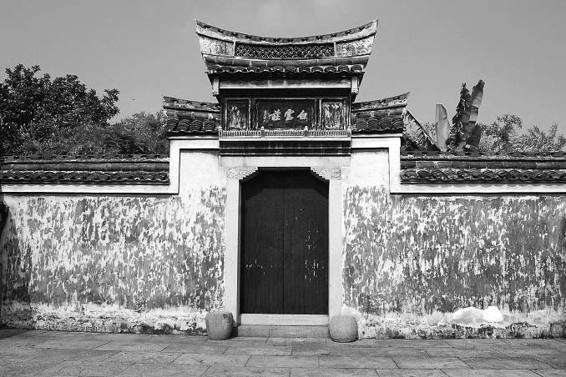
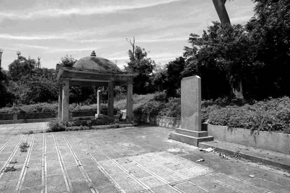

约自十七世纪六十年代中期起，黄宗羲接受了满清入主的事实，抑或承认了清政府之合法性，此毋庸置疑。清末，新的排满兴起时，黄宗羲的“思想身份”成了一个很大的问题。一些想借重其革命性思想的维新者，为其后期而棘手以至惶惑，只好矢口否认他对满清的接受和承认；反之，另一些维新者出于同样原因则感到极大失望，而亟诋其晚节不保。及至当代，因为功利和实用主义的义理的引导，具体说看在清朝和康熙替中国大拓了疆土的份上，有人又把他的晚年表现当成顺应潮流、与时俱进加以歌美。
以上态度之种种，都混淆了许多东西。而不加混淆的办法，就是，凡为事实的都原原本本承认，舍此以外不添油加醋。黄宗羲的最后二十五年，只有两个事实。一、他确实不再反对清政府，二、他从没有跑到清政府里做事。我们不需要讲太多太复杂的话，只把这两条讲清楚，黄宗羲的晚年自然随之清楚。

证人书院旧址
黄宗羲讲学的证人书院，地点并不一定，白云庄是较固定的一处。其为宁波万家产业，因万斯选世称“白云先生”得名。

鲁监国之墓
鲁肃王朱以海，太祖十世孙，乙酉年（1645）六月由张国维等奉为监国，1662 年薨于金门。其在金门甚苦，常以地瓜果腹，人称“番薯王”。金门现存两处监国墓，一为道光间林某据文献所寻，报经官方确认。1959 年，当地炸山采石，偶现一洞，入内检视，获“皇明监国鲁王圹志”碑一座，方知旧墓为假，又三年建成新墓，立碑亭，碑刻蒋介石“民族英范”题字。八十年代初由于新的出土，又证此处实为宋代某命妇墓，鲁王葬处终究成疑。
先说放弃对满清的敌对态度。这在他有很多表现，比如，与官府或其官长交往、鼓励弟子参加旨在从政的科举考试。下面，再增加两条证据。
一是开始奉清朝正朔。他给亡母姚氏所写传记，以很明确的历史时间概念开头：
先妣姚太夫人，生于万历甲午二月初二日，卒于康熙庚申正月初十日，享年八十有七。[81]
承认母亲身跨两个王朝、曾经是它们分别的子民。同类写法，例子很多，如《紫环姜公墓表铭》《高古处府君墓表》《毛烈妇墓表》等等。对于他这样深知、极重历律与王统关系的历法专家（他曾是鲁王历法的编制者），这种书法，作为完全接受改朝换代之事实的标志，是没有半点争议的。
而变化不单显现于使用清朝年号上，随之而来的，是文字里大量的第二类证据，即他渐渐习惯了从正面和肯定的角度谈论满清。有篇碑文，不光用了康熙年号，且以“王师下江南”称清军南下。[82]又一墓志铭，以此句起首：“新朝天下初定，未有号令……”[83]余如《乡贤呈词》：“幸遇圣朝，干戈载戢，文教放兴。”[84]《余姚县重修儒学记》：“圣天子崇儒尚文，诸君子振起以复盛时人物，行将于庙学卜之矣。”[85]尤其是康熙二十六年（1687）——之前我们未书清朝年号，现在据他本人态度相应地变一下——给徐乾学的信，对满清的赞扬已完全达到流畅、坦然、毫无心理障碍的状态：
去岁得侍函丈，不异布衣骨肉之欢。公卿不下士久矣，何幸身当其盛也。今圣主特召，入参密勿，古今儒者遭遇之隆，盖未有两。五百年名世，于今见之。朝野相贺，拭目以观太平，非寻常之宣麻不关世运也。[86]
至于“皇上仁风笃烈，救现在之兵灾，除当来之苦集”之句，都有点肉麻。这封信有求于徐乾学（为父亲祠堂碑文、儿子太学学籍以及自己筑墓费用等三事），不免拣好听的说，虽然过甚其辞，但已经融入现实、自认为清朝子民的心态，并非假装。
从坚持抗清十多年、濒于九死，一变至此，似乎可以说面目全非了。不过且慢，先不急于这么说。我们再来看一封信，那是康熙十七年（1678）写给门人陈锡嘏（表字介眉）的。这时，黄宗羲已经和吕留良等闹翻，证人书院培养的弟子已有一大批考取满清的举人、进士并入朝为官，陈锡嘏便是其中之一。陈于康熙十五年登进士第，刻下正在翰林院做着编修。是年，康熙皇帝下了一道征选令，要将全国仍处民间的硕学俊彦都网罗上来，当时掌翰林院的侍读学士、《明史》总裁叶方蔼，向康熙举荐了黄宗羲，得到批准，叶遂拟下正式公文要地方将黄宗羲送到中央。此事被陈锡嘏知道，大惊失色，万一公文一到，黄宗羲来个拒不应召，便骑虎难下。他代老师做了个主，立刻求见叶方蔼，诉其原委，叶虽为贵官，骨子里也是学者，能够体谅，于是按下未发。事既稳，陈锡嘏把经过写信告诉老师，这便有了黄宗羲的答书：
吾兄与国雯书见及。言都下诸公，欲以不肖姓名尘之荐牍，叶讱菴先生且于经筳御前面奏，其后讱菴移文吏部，吾兄力止。始闻之而骇，已喟然而叹，且喜兄之知我也。
证明陈锡嘏的估计完全正确。而有意味的是下面一段：
某年近七十，不学而废，稍涉人事，便如行雾露中，老母年登九十，子妇死丧略尽。家近山海，兵声不时撼动，尘起镝鸣，则扶持遁命。二十年以来，不敢妄渡钱塘，渡亦不敢一月留也，母子相依，以延漏刻，若复使之待诏金马，魏野所谓断送老头皮也。
魏野是宋代高士，一生守寒不为官，“不喜巾帻，无贵贱，皆纱帽白衣以见”[87]，他也曾有推辞皇帝征召的故事，然检《宋史》本传，未见“老头皮”之说，应系黄宗羲误记，其当出宋人笔记《侯鲭录》卷六：“今日捉将官里去，这回断送老头皮。”[88]相当于说，做官等于“完蛋”——这时，我们又想起了当年黄宗羲对鲁王“请以布衣从”的往事。最后，再次感谢陈锡嘏解围：“非兄知我，何以有是乎？”并以此作结：“讱菴先生处，意欲通书，然草野而通书朝贵，非分所宜。”顺便说一下，《与陈介眉庶常书》写得情致生动、文采斐然，全不是《与徐乾学书》那么虚浮客套。这种不同，恐怕不在于收信人——他和徐乾学的关系并不浮泛——而在事情不同，《与陈介眉庶常书》所谈之事，明显触动了他的心曲，把全副情感和笔墨都调动起来，是真正的垂文自见之作。[89]
某种意义上，黄宗羲的晚年，全在这两封信中。一个，是经常与当局、官员打交道以致有些密切的黄宗羲；一个，是回避直接、正式为清朝做事或成其座上宾的黄宗羲。他于这二者，似有一道惟自己才看得清的分界线，而又拿捏得极好，总是将将在可迎可拒之间。那也是没办法的事，既然他打算放弃“游侠”生涯回到日常状态，奉母、养家、过活、读书、治学，总得有个态度，有个对策。何况他对甲乙以来的中国，以及整个历史、社会的道理，还有自己与众不同乃至越于时代所能理解程度之外的思考。